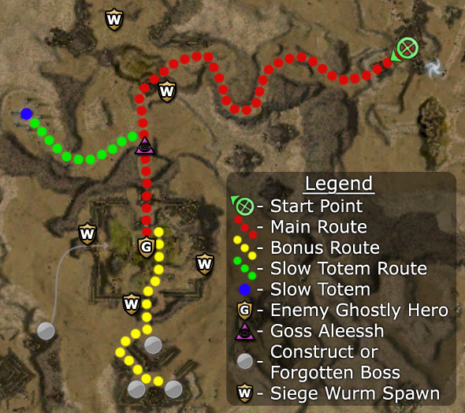

Elite: Warrior's Endurance
M15
Dunes of Despair
◉ Mission Map

Click to enlarge · Local cache · Wiki
Summary (click to expand)
* Elona Reach and Thirsty River must also be completed before Augury Rock.
Region: Crystal Desert · Mission: 15 of 25 · Type: Cooperative
✓ Objectives
Help the Ghostly Hero reclaim his throne.
- Escort the Ghostly Hero to the Temple of Ascension.
- Defeat the Enemy Ghostly Hero.
- Hold out while the Ghostly Hero performs his ritual.
- *BONUS* Gain more glory by defeating the three forgotten generals and their minions within their forts.
→ Walkthrough

The rune in Augury Rock representing Dunes of Despair.
At the beginning, you meet the Ghostly Hero who asks you to help him reclaim his throne. During the mission, he will use Claim Resource to open any drawbridge gates. Speaking to him toggles his movement behavior between following and staying put: he will follow the player who spoke to him when he was in stay-mode and continue doing so until that player speaks to him again.
After he lowers the first bridge, cross the gorge. At the other side, you can continue south with the mission killing the mesmer boss Goss Aleessh and his cohorts to trigger a cinematic, or detour west to gain the Slow Totem (an optional tool) and come back. When dropped, this item creates a ward effect that slows movement of any foe passing through.
Aleessh's death triggers a cinematic, placing you near the next drawbridge; again, use the Ghostly Hero to lower it. You will now be attacked by Enchanted armors. To protect your ally, lead the Ghostly Hero back from the bridge and use the gateway as a choke point to fend off the incoming foes. If you have the Slow Totem, drop it slightly ahead of where the party is waiting. Now, the only foe left in sight should be the enemy Ghostly Hero at the Throne. Defeat him and have your Ghostly Hero approach to capture it and begin the last stage of the mission. You will have to protect him for the next ten minutes.
Again, if you have the Slow Totem, drop it in front of the Ghostly Hero to delay melee foes. Now, Forgotten Arcanists will come in pairs from the West, East and South. Afterwards, a Siege Wurm will start to attack your party from the East. It is possible to kill the wurm after the Arcanists are dead and before the first melee group approaches, but you can simply heal your allies and ignore it.
At the five or six minute mark, more groups of Forgotten and a boss will approach the altar. Another pair of siege wurms will appear on the West, and then on the South. If you defeat the Forgotten, there will be no more groups attacking the altar, and you can use the remaining time to kill off the wurms. When the timer reaches zero and the ghostly hero is still alive, the mission will complete.
To complete the mission, you need tools to deal with the Arcanists (i.e. interrupts). The rest of the defence is spent doing more or less nothing - you can kill the wurms quickly if you have the right skills. The bonus is another matter.
Timing
You must protect the Ghostly Hero for 10 minutes, during which time:
- Four pairs of Forgotten Arcanists appear: from the East → West → South → East (again).
- Two pairs of Enchanted bows: South → West → West (again, with a boss)
- Siege Wurms appear at fixed times:
- 8:20 (remaining): East gate.
- 6:40: West gate.
- 5:00: South gate.
- 3:20: West gate (again).
- During the bonus: three Forgotten foes spawn after killing each boss. They will attack from the West (northernmost general's reinforcements), South (southeast general) and East (southwest general).
★ Bonus
Players consider this bonus to be one of the most difficult in the game: you have a limited amount of time (some of which must be spent unlocking the bonus area), you need to split your group to protect an Ally (threatened by increasing numbers of foes), and your party is limited to six characters.
During the final siege where you defend the Ghostly Hero, you must kill three bosses and their groups located south of the fortress without letting the hero die and before the ten minute timer hits zero. The first boss is to the south behind the drawbridge. The second and third bosses are in the building behind the first boss. As you kill each general, a small group of Forgotten spawn outside the southern temple and head directly towards the Ghostly Hero.
You will get credit for the bonus as long as you kill all three generals, even if the ghostly hero dies later (which would cause you to lose the mission).
Method one: Focus first on the mission
The simplest method is to focus first on eliminating the foes attacking the Hero before going for the bonus. Wait until the Forgotten Boss attacks from the west gate. If all goes well, you should have nearly five minutes in which to complete the bonus.
To maximize the time, be sure to aggro the first group of reinforcements that spawn after killing the first general to prevent them from going after the Ghostly Hero. You can ignore the group that spawns after killing the second general until you have defeated the third, which completes the bonus.
If you still need to complete the mission, stop the last group of reinforcements from reaching the Ghostly Hero as you return to the altar. When you arrive back at the Ghostly Hero, the Forgotten spawn that you left from the death of the second general will arrive. Even if left alone this group often has no time remaining to destroy the Ghostly Hero.
Method two: Take advantage of the pause
After clearing the Arcanists, you have some time before the Forgotten attack the altar again. Instead of attacking the siege wurms, head south to rush the generals. You will need extremely high damage output and a speed boost is nearly essential. Take out as many of the generals (and their reinforcements) as possible before heading back to the altar to defend the Ghostly Hero. You can give yourself some extra time by leaving a healer to protect your ally, e.g. a bonder or a spirit spammer.
If you are worried about the timing, killing even just one general during this pause is enormously helpful. Head back to the altar afterwards and then proceed as if you are using method one.
With heroes/henchmen, it's sometimes easiest to simply do the bonus, letting the Ghostly Hero die and then re-do the mission.
The Forgotten and Enchanted will resume attacking with around 6:05 minutes on the clock. The Ghostly Hero can endure the Siege Wurms and the first wave of Forgotten; he can't endure the rest of them. You need to be back at the Ghostly Hero at 4:50 to ensure his survival. You can get away with it at 4:30 if you (the player) have spells that can rapidly heal the Hero - a speed boost is necessary.
Method three: Signet of Spirits solo
A spirit spammer can solo the bosses while the rest of the party stays back and defends the fort. The build should include a self-heal, e.g. Mend Body and Soul or Spirit Light. Set up the spirits, pull the boss groups one at a time, and repeat.
Alternatively, if you leave a Signet of Spirits hero with the Ghostly Hero, they will both survive until you come back in to visual range of the Hero. This allows you to charge the three bosses.
Method four: Kill Goss Aleessh's group after starting the timer
This method takes advantage of quirks in the game's mechanics, the first moves the Ghostly Hero to a safe spot after watching the mid-mission cinematic and the second is that the foes target the throne not the Ghostly Hero.
Killing all three members of Goss Aleessh's group will trigger a cutscene, where all allies including the Hero are teleported to where Aleessh originally patrols. Have your team utilize the slow totem to lure the last remaining member away from the bridge and enter the fortress. Once inside, before making the Ghostly Hero claim the altar, flag your H/H outside the fortress in preparation to kill Aleessh's team's remaining foe. Once the Hero begins to claim the altar and the timer begins, kill the remaining team member as quickly as possible before the enemies begin to surround the Ghostly Hero at the altar. Doing so will teleport the Ghostly Hero outside the fortress via the cutscene trick. Once outside the fortress, talk to the Hero to make him stay (safe spot). Now you have over nine minutes to complete the bonus while ensuring mission completion at the same time. The Ghostly Hero can remain alone and will be completely safe because the mission script sends the foes to the altar, not to the Hero.
You don't actually need the slow totem. One team member can lure Aleessh's entire team to one side letting the rest of the party sneak into the temple from the other. That team member with Spirits and Summon Spirits can lure and escape easily.
There are several points where the party should take special care:
- Passing Goss Aleessh: to prevent this boss' group from following, use the Slow Totem or distract them with minions or spirits.
- Single-player teams can use heroes and henchmen to draw his aggro, while the player sneaks the Ghostly Hero to a safe spot just before the bridge.
- Multiple-player teams can choose to have one player pull Goss Aleessh's group northeast, safely out of the way.
- Be careful to avoid popping up the Jade Scarabs southwest of the fortress' entrance ramp. Also, try to avoid letting the hero lower the bridge before you are ready.
- Entering the fortress: as with the other methods, use the drawbridge gate as a choke-point against the first few groups of Enchanted Hammers and Swords.
- Re-entering the fortress: you are likely to find a mob (including a re-incarnated Enemy Ghostly Hero) waiting for you at the shrine after the post-Aleessh cinematic. Again, use the entrance gate as a choke-point and pull the easily-separable mobs towards your party. Take your time; at worst, you will still have over seven minutes to complete the bonus.
Warning to Survivors: During the end scene you will see the swarm of Enchanted & Forgotten which has been completely avoided, those foes will still be attacking the party who "appear" to be invulnerable. However, behind the cinematic, the party actually wipes but still successfully completes the mission and bonus, and is therefore sent to Augury Rock.
Variations
Each of these tricks can be used in combination with any of the methods above.
- Partial completion before the timer begins: You can sometimes kill the first general before the timer begins by forcing the Ghostly Hero to wait outside the fortress before capturing the altar. Head to the southern part of the compound and use distance attacks to aggro the general's group and kill them.
- Ignore less-threatening wurms: You can avoid spending time on the siege wurms that do not threaten the Ghostly Hero; they only begin attacking if you get within aggro range or attack them.
◆ Hard Mode
All of the techniques above work in hard mode, however there is less room for error.
☠ Bosses & Elites
Elite: Marksman's Wager
Elite: Word of Healing
Elite: Order of the Vampire
Elite: Mantra of Recovery
Elite: Mantra of Recovery
Elite: Ether Renewal
✦ Tips & Notes
Skill recommendations
- Backfire or Visions of Regret helps to counter the spellcasting bosses.
- The wurms can be defeated using Pain Inverter or a combination of Wastrel's Worry/Wastrel's Demise, Power Drain, and Leech Signet.
- Signet of Spirits spirit spammer-builds can solo the bonus bosses or defend the altar.
- To protect the Ghostly Hero, bring a bonder or spirit spammer. The safest spot for the bonder is in the north doorway (where you entered); only go closer to cast heals. Be wary in hard mode, since the Forgotten Cursebearers have Strip Enchantment.
- Bring condition removal to remove blindness caused by Enchanted Bows (especially during the bonus).
Notes

- There is a large amount of desert to uncover for the cartographer title beyond and around the fort. The large area amounts to approximately 0.7% of Tyria. To access it all a player must run across at least one invisible bridge (never lowers graphically) into the South West fortress.
- Completion of this mission will fill in page #8 of The Flameseeker Prophecies storybook.
- After completing this mission, your party will be taken to Augury Rock.
| The Guild Wars 2 Wiki has an article on Shallows of Despair. |